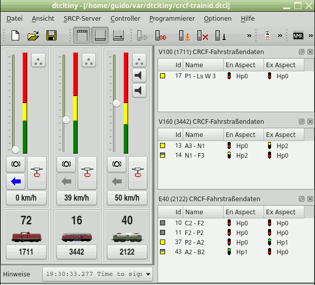
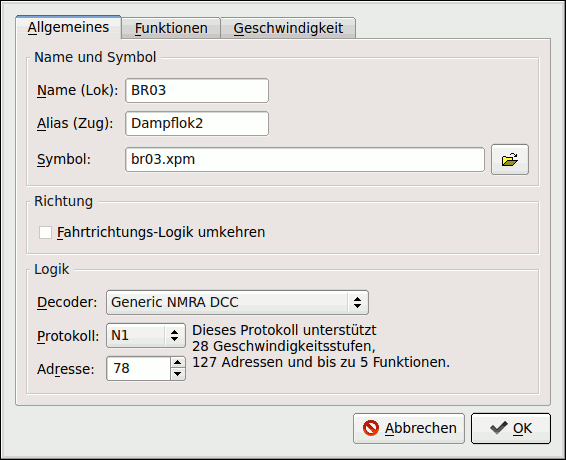
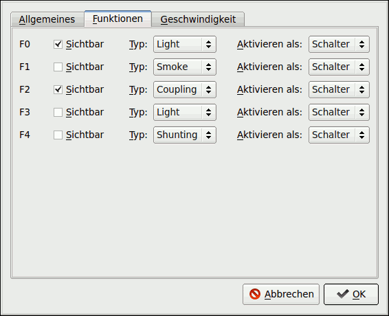
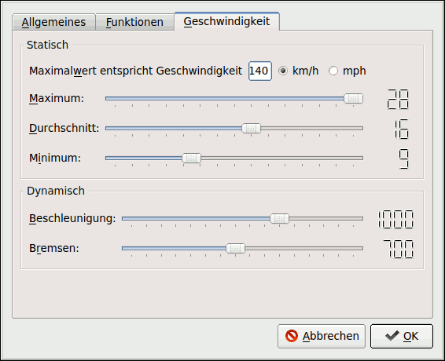

dtcltiny |
dtcltiny ist ein Programm, mit dem man Loks auf einer Modellbahn steuern kann, die mit einem Digitaldecoder ausgerüstet sind. Es stellt für jede Lok einen Regler zur Verfügung, mit dem sich Geschwindigkeit, Fahrtrichtung und Sonderfunktionen einstellen lassen. Nebenbei bietet es noch die Möglichkeit, Decoder nach dem NMRA-DCC Standard und Uhlenbrock-Decoder zu programmieren. Zusätzlich gibt es noch einige Komfortmerkmale; diese werden bei den Bedienungshinweisen erläutert.
Neben einer funktionierenden Linux-Installation mit X Window System und Qt-Bibliotheken (Version 4 oder 5) braucht man außerdem noch das Gegenstück zu diesem SRCP-Client, den SRCP-Server. Dieser sollte die Protokollversion SRCP 0.8.4 unterstützen, für Grundfunktionen reichen auch die Protokollversionen 0.8.0 bis 0.8.3. SRCP steht für "Simple Railroad Command Protocol" und beschreibt einen Befehlssatz zur Steuerung von Modellbahnen. Mehr dazu siehe unter Der Moba. In den meisten Fällen wird wohl als Server das Programmpacket "srcpd" zum Einsatz kommen, das entweder die Aufgabe einer Software-Digitalzentrale, oder eine Vermittlerrolle zu einer dort angeschlossenen Digitalzentrale übernimmt. Mehr zum srcpd findet man auf dessen Projektseite. Hinweis: Zum Ausprobieren kann man dtcltiny auch ohne Server starten.

Bild 1: Hauptfenster mit Lokreglern und Fahrstraßenansicht
Als root installieren mit rpm -i <dateiname>
Als root neues rpm erstellen mit rpm --rebuild <dateiname>. Das fertiggestellte Archiv wird im Verzeichnis /usr/src/redhat/RPMS/i386 (bei anderen rpm-basierten Distributionen ähnlich, SuSE: /usr/src/packages/RPMS/i586, Mandrake: /usr/src/RPM/RPMS/i586) abgelegt. Dies können sie wie im Abschnitt zuvor beschrieben installieren.
Archiv auspacken, z.B. mit tar xzf dtcltiny-0.4.4.tar.gz. Der Quellcode befindet sich nun im Verzeichnis dtcltiny-0.4.4. Wechseln Sie dort hinein und erstellen sie das Programm mit ./configure && make. Nun als root das Programm installieren mit make install
Zunächst sollte der SRCP-Server gestartet werden. Die Anweisungen dazu entnehmen sie bitte dessen Dokumentation. Bei Probebetrieb von dtcltiny kann dieser Schritt entfallen.
dtcltiny kann entweder über das Menü (Kategorie "Spiele"), oder von einem Terminalfenster folgendermassen gestartet werden
dtcltiny [<dateiname.dtcl>]
Konkretes Beispiel:
dtcltiny loco.dtcl
dateiname.dtcl: Dieser optionale Parameter gibt eine Datei an, von dem eine gespeicherte Konfiguration gelesen werden soll. Diese Dateien haben normalerweise die Endung ".dtcl" (muss mit angegeben werden)
Ist der Rechner mit dem in den Voreinstellungen des Programms angegebenen Server-Namen nicht vorhanden oder nicht erreichbar, bzw. läuft dort kein SRCP-Server, so bringt das Programm eine Fehlermeldung. Diese Einstellungen können unter dem Menüpunkt "Optionen/Einstellungen" vorgenommen werden. Sie werden in der Datei ~/.dtcltiny gespeichert und stehen beim nächsten Programmstart wieder zur Verfügung.
Nach dem Start erhalten Sie entweder ein leeres Programmfenster, falls keine Konfigurationsdatei geladen wurde, oder ein Fenster mit den geladenen Lokomotiv-Steuereinheiten (Controllern). In den Benutzereinstellungen lässt sich eine Konfigurationsdatei wählen, die automatisch beim Programmstart geladen wird.
Wählen Sie "Controller -> Hinzufügen". Es wird ein neuer Controller angelegt, dessen Einstellungen noch angepasst werden müssen. Über das Kontextmenü des Controllers (Klick mit rechter Maustaste) wählt man dazu den Eintrag "Einstellungen". Es erscheint ein Dialog, mit dem Sie die Eigenschaften des neuen Controllers festlegen. Der Dialog beinhaltet drei Register.

Bild 2: Eigenschaftsdialog mit Register "Allgemeines"
In diesem Register werden die grundlegenden Eigenschaften des Controllers eingestellt. Unten in der Gruppe "Logik" müssen der Lok-Decoder, das verwendete Protokoll und die Decoder-Adresse ausgewählt werden. Zunächst wählen sie bitte den verwendeten Lok-Decoder aus der Liste. Falls er nicht in der Liste existiert, wählen sie einen der beiden generischen Decoder aus, je nachdem, ob er mit dem Motorola (Märklin) oder dem NMRA DCC Protokoll arbeitet. Nun schauen sie in die Liste der angebotenen Protokolle; dort haben sie im einfachsten Fall keine Wahlmöglichkeit. Wenn sich doch mehrere Protokolle in der Liste befinden, können sie entweder frei wählen oder müssen es bei dem vom Decoder angebotenen Wert belassen. Eine Erklärung der Kennwerte des ausgewählten Protokolls finden sie direkt neben dem Adressfeld. Anschliessend müssen sie noch die Adresse einstellen.
Einen weitgehend informativen Charakter haben die Felder Name (Lok) und Alias (Zug). Dort können sie der Lok und dem Zug jeweils einen beliebigen Namen geben (nicht zu lang). Für den Alias-Wert ist es zur Nutzung erweiterter Automatikfunktionen erforderlich, ihn als Zugnummer zu nutzen (z.B. 2341); Deteils hierzu folgen in einem anderen Kapitel. Einer der beiden Bezeichnungen kann in der Steuereinheit angezeigt werden. Ebenfalls optional kann man ein kleines Lokomotiv-Symbol für den Controller auswählen. Mit Klick auf das Ordnersymbol öffnet sich ein Dateidialog, mit dem sie eine xpm-Datei auswählen können.
Die Checkbox "Fahrtrichtungs-Logik umkehren" kann beim Neuanlegen einer Lok erstmal inaktiv gelassen werden. Sollte sich herausstellen, dass die tatsächliche Fahrrichtung der Lok nicht mit der im Controller angezeigten Richtung übereinstimmt, so kann dies durch Setzen dieser Einstellung korrigiert werden.

Bild 3: Eigenschaftsdialog mit Register "Funktionen"
Abhängig vom gewählten Decoder stehen unterhalb des Funktionsreiters keine oder bis zu 28 Funktionen zur Konfiguration zu Verfügung. Ob alle einstellbaren Funktionen tatsächlich benutzt werden können, hängt vom Decoder selbst ab (siehe dessen Bedienungsanleitung). Mit der Option "Sichtbar" lässt sich einstellen, ob die entsprechende Funktion als Schaltfläche in der Steuereinheit angezeigt wird. Es lassen sich aus Platzgründen nur bis zu sechs Funktionen dort unterbringen. Bis zu zwölf Funktionen lassen sich über die Funktionstasten einer Computertastatur aktivieren. In der nächsten Spalte kann man auswählen, welcher Effekt mit der Funktion gesteuert wird. In der letzten Spalte kann man die Funktionsweise des Betätigungsknopfs einstellen. In der Einstellung »Schalter« arbeitet er wie ein Schalter, d.h. er rastet im Aus- und An-Zustand ein. Wenn »Taster« gewählt ist, funktioniert der Knopf als Taster, d.h. die Funktion ist nur solange an, wie der Knopf gedrück wird. Letzteres ist z.B. bei einem Entkuppler oder Lokpfeife sinnvoll.

Bild 4: Eigenschaftsdialog mit Register "Geschwindigkeit"
Im Reiter »Geschwindigkeit« gibt es folgende Einstellungen:
Hinweis: Die Software-Verzögerung beim Beschleunigen und Bremsen tritt nur in Kraft, wenn die Fahrgeschwindigkeit mit einem Klick auf den grünen, gelben oder roten Balken, sowie dem Bremssymbol gewählt wird. Der Schieberegler folgt dabei der momentanen Geschwindigkeit. Wird während einer solchen Phase am Schieberegler gezogen, bricht der Beschleuigungs-/Bremsvorgang ab (diese Funktion ist derzeit ausßer Betrieb). Wird dieselbe Lok noch von einem anderen Regler (z.B. von einem Clubkollegen) gesteuert, unterbricht dessen Einflußnahme auf die Lokgeschwindkeit ebenfalls den Beschleuigungs-/Bremsvorgang (ist ebenfalls außer Betrieb).
Sobald Sie auf "OK" klicken, werden die neuen Einstellungen für den Controller im Hauptfenster übernommen. Nachträgliche Änderungen der Einstellungen sind jederzeit möglich, wenn Sie mit der rechten Maustaste auf einen Controller klicken und im Kontextmenü "Eigenschaften" auswählen. Dieses Menü bietet auch einen Eintrag zum Löschen eines Controllers. Mit "Datei -> Speichern unter" kann man die Einstellungen der Controller in eine Datei sichern, um sie später mit "Datei -> Öffnen" wieder zu laden.
Neben den normalen Menüeinträgen befinden sich unterhalb des Menübalkens u.a. drei Schalter, deren Funktionen hier kurz erläutert werden:
Diese Funktionen sind nur anwählbar, also farbig, wenn eine Verbindung zum SRCP-Server aktiv ist. Ansonsten sind sie ausgegraut.
Starten Sie das Programm und legen Sie einen Controller an. Wenn Sie nun mit der Maus ein paar Sekunden auf ein Steuerelement zeigen (nicht klicken), bekommen sie eine Erklärung angezeigt (Tooltip). Deshalb und weil alles selbsterklärend sein sollte, verzichte ich hier auf eine nähere Beschreibung. Nur wenige kurz Punkte:
Wird auf den grünen, gelben oder roten Streifen neben dem Schieberegler oder auf den Bremsbutton geklickt, wandert der Schieberegler mit der eingestellten Brems- und Beschleunigungsverzögerung in Richtung Zielwert. Dieses wird aber vorzeitig beendet, wenn
| Leertaste | Richtungswechsel (aktueller Controller) |
| ° (Grad) | Schaltet Funktion 0 (aktueller Controller) |
| F1...F12 | Schaltet Sonderfunktionen 1...12 (aktueller Controller) |
| <Strg>-x | Nothalt (aktueller Controller) |
| <Strg>-b | Bremsen (aktueller Controller) |
| Pfeiltaste nach oben / nach unten | Geschwindigkeit um 1 Stufe erhöhen/verringern (aktueller Controller) |
| Bild hoch/runter | Geschwindigkeit um 1/10 der Maximalgeschwindigkeit erhöhen/verringern (aktueller Controller) |
| Tab | Wechseln auf nächsten Controller |
| <Strg>-n | Neuen Lokcontroller anlegen |
| <Strg>-o | Neue Datei öffnen |
| <Strg>-q | Programm beenden |
| <Strg>-p | Digitalstrom ein-/ausschalten |
Beschreibung folgt später, dürfte aber auch ohne Beschreibung zu Bewältigen sein.
Da ein SRCP-Server in der Regel die Kommunikation mit mehreren SRCP-Clients unterstützt, ist es möglich, dass dieselbe Lok von mehreren Benutzern gleichzeitig bedient wird. Um die Controlleranzeige synchron mit den tatsächlich eingestellten Fahrwerten zu halten, unterstützt dtcltiny die Auswertung des sogenannten Infoports. Diese Funktion ist automatisch aktiv, muss also nicht explizit eingeschaltet werden. Automatische Beschleunigungs- und Bremsvorgänge werden bei Beeinflussung vom Infoport abgebrochen (derzeit außer Funktion).
Um die Beeinflussung einer mit dtcltiny gesteuerten Lok von anderen SRCP-Clients zu verhindern, unterstützt dtcltiny den SRCP-Befehl "LOCK". Damit lässt sich der Zugriff durch andere Controller verhindern bzw. explizit erlauben; dtcltiny kann die entsprechende Lokomotive damit wahlweise exklusiv steuern. Ein- und Ausschalten läßt sich diese Funktion über das Kontextmenü des entsprechenden Controllers (Sperren/Entsperren). Eine gegebenenfalls vorhandene Sperre wird in der Steuereinheit neben der Digitaladresse angezeigt.
In Kombination mit einem anderen SRCP-Client, der dtcltny mit speziellen Angaben zur Fahrstrecke versorgt, ist es möglich, Züge vollautomatisch über eine Modellanlage laufen zu lassen. Dieser Automatikbetrieb schließt das Losfahren vor Signalen, die von Halt auf Fahrt wechseln, das Einhalten von Geschwindigkeitsbeschränkungen bzw. Sollgeschwindigkeiten sowie das Halten vor Signalen ein.
Diese Funktionalität wird in dtcltiny durch das Verwenden von Standardnachrichten (Generic Messages, GM) möglich. Mit dieser seit SRCP 0.8.4 implementierten Erweiterung können SRCP-Clients Nachrichten (META-Informationen) austauschen, die über den normalen SRCP-Sprachumfang hinaus gehen. Die Kapselung dieser Zusatzinformationen erfolgt im Falle von dtcltiny in CRCF (Common Railroad Configuration Files), einer Art Makro-Sprache, die weitgehend frei formulierbare Dateneinheiten ermöglicht (siehe: CRCF).
Als Kommunikationspartner für dtcltiny kann hier das Programm spdrs60 dienen (http://spdrs60.sourceforge.net/). Zur Verwendung von CRCF siehe auch im dortigen Handbuch das Kapiltel 8. In spdrs60 lassen sich Fahrstraßen anlegen, die sich mit Werten zu deren Länge, Geschwindigkeitsbeschränkungen, Zugbelegung etc. näher beschreiben lassen. Diese Informationen stellt das Programm spdrs60 über CRCF für Abfragen zur Verfügung, bzw. sendet diese als Rundrufnachrichten an angebundene SRCP-Clients. Es arbeitet also als CRCF-Server und CRCF-Client. dtcltiny arbeitet bisher nur als CRCF-Client.
Die Grundlage für einen funktionierenden Automatikbetrieb sind mehrere Dinge, zunächst seien die für das Programm spdrs60 aufgelistet:
Für dtcltiny sind folgende Voraussetzungen zu beachten:
Während der Automatikfahrt laufen folgende Schritte ab:
Ist die oben beschriebene Basiskonfiguration vorhanden, so sendet man zum Start des Automatikbetriebes über das Fahrstraßenmenü von sprds60 (Alle Zugnummern senden) den aktuellen Aufenthaltsort der Züge an dtcltiny. Abhängig vom aktuellen Begriff der entsprechenden Signale, starten die Züge die Fahrt, bzw. warten auf das Einstellen der nächsten Fahrstraße durch den Fahrdienstleiter, um dann automatisch los zu fahren.
Im Gegensatz zu frühen Versionen von dtcltiny sind die Informationen über Lok-Decoder und Protokolle nicht mehr im Quellcode enthalten, sondern werden aus separat abgelegten Dateien geladen; es gibt jeweils eine mit dem Namen "decoders" und "protocols". Sie befinden sich im Verzeichnis »data« und lassen sich mit einem beliebigen Texteditor bearbeiten. Es können beliebig neue Einträge hinzugefügt werden und bestehende gelöscht oder verändert werden. Neue Einstellungen stehen zur Verfügung, sobald der Konfigurationsdialog geladen wird ("Add Loco" oder "Properties"). Weitere Hinweise finden sie in den Kommentarzeilen der Dateien selbst.
Die Autoren übernehmen keinerlei Haftung für Schäden, die mit diesem Programm entstehen.
Der Quellcode dieser Software unterliegt der GPLv2. Näheres ist auf http://www.gnu.org/ zu erfahren.